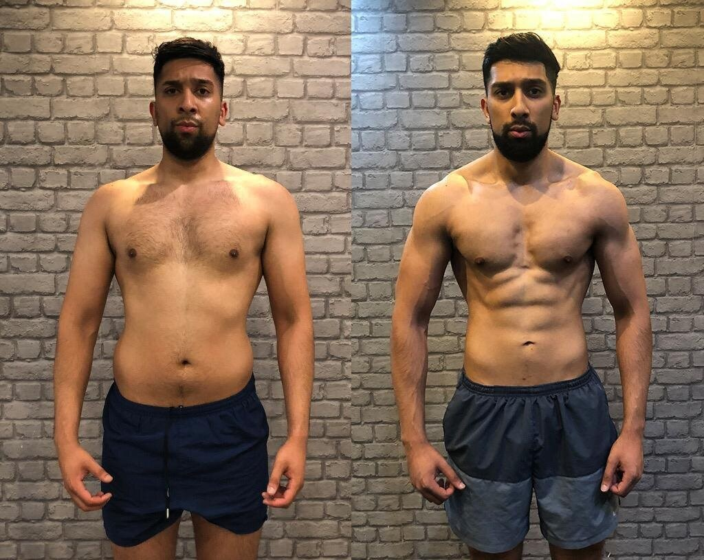
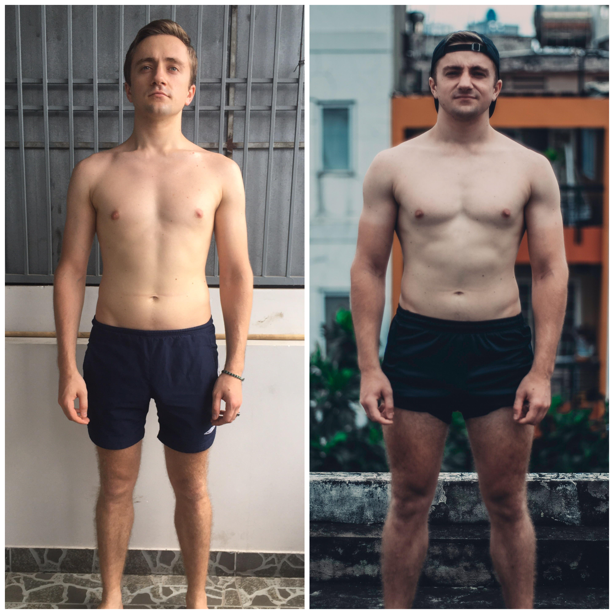

Progress is when you improve soemthing and better it overtime. In terms of being active we believe progress is extremlely important as without it, we would essentially be wasting our time and efforts by staying where we are. Think of the greatest athletes in the world like Cristiano Ronaldo, Lionel Messi, Neymar Jr, Lebron James, Islam Makhachev, etc, they also went through hardship in order to progress and get to where they are now and yet, are still progressing even while being the best. That's why we believe progress is crucial to an athlete or any individual who is trying to better themselves so they can become the best they can be.
As for starters progressing begins at the individual. You must be determined to wanting to progress and be greater than yesterday. Therefore, without self belief and motivation you will not be able to progress. Patience is also a key factor, it is important to remember that people progress differently, some may have rapid progression while others maybe slower, as a result of this it is important to remember to be patience and progression takes time. Another important factor to progression is keeping track. You can simply do this by recording what you have done everyday and compare it with the last days. Finally, never give up. It is VITAL that you do not stop just because of a mountain too high to climb or a hurdle you have fallen over. Just as mentioned earlier the greatest athletes in the world are only here today because of hard work, patience, determination, motivation and perhaps most importantly not giving up. To summarise, Never Back Down, Never Give Up. .
consistency is what truly holds together a successful fitness journey. It fosters physical adaptations, creates habits, prevents setbacks, and contributes to both physical and mental well-being. If individuals prioritise are more likely to achieve and maintain their fitness goals over the long periods of time.
Documenting progress in fitness is a dynamic tool that goes beyond just recording numbers. It serves as a map for your fitness journey, offering motivation, insights, and the flexibility needed to adapt and prime in your pursuit of a healthier and fitter lifestyle.
It is important to rest after exercise regurlarly otherwise the body and mind will become exhausted and struggle to function or even end up getting injured. (See our Rest page for more information on this).
Discover our story in providing Fitness services.
Indulge in the excellence of our fitness programs, where a decade of commitment to quality ensures your journey to health and well-being is met with superior services and personalized plans.
NARP, our mission is to empower enthusiasts with top-tier fitness essentials, enhancing their wellness journeys. We're dedicated to delivering reliable, durable, and innovative products, fostering memorable fitness experiences and lasting well-being.
Our vision is to establish ourselves as the ultimate destination for fitness enthusiasts, renowned for our diverse range of top-tier fitness gear and unparalleled customer service. We aim to ignite and empower individuals to embrace the benefits of an active lifestyle, fostering memorable and transformative fitness journeys.
Reach out to us for any inquiries or feedback.
8 Lewisham Way, London, SE14 6NW
info@narpfitness.com
(+44) 8538-536589
Monday - Friday: 9:00 AM - 10:00 PM
Saturday: 10:00 AM - 5:00 PM
Sunday: Closed
www.narp_fitnessgroup.com